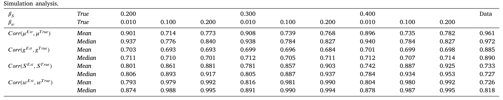
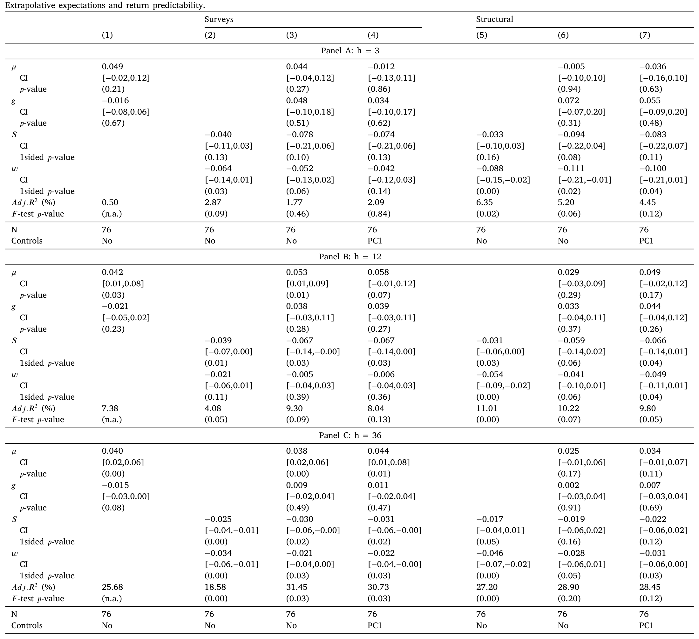
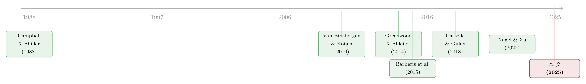

想知道投资者信什么？去问价格，别问问卷
本文读的是 Cassella, Chen, Gulen & Liu (2025, JFE)：他们不再用问卷去测投资者的「外推」偏差，而是反过来——把一套带外推的现值模型（present-value model）套在市场的价格—股利比上，用卡尔曼滤波把投资者的收益外推与现金流外推两条信念曲线从价格里「滤」出来。结果，这两条从价格里捞出来的曲线，和问卷里测到的外推信念相关系数高达 70% 与 50%，而且预测未来收益的本事不输甚至略胜问卷。
1 引言：你怎么知道别人在「外推」？
行为金融里有一个被反复验证、几乎成了共识的事实：投资者会外推 (extrapolation)。市场涨得好，他们就觉得还会接着涨；基本面强劲，他们就觉得未来还会更强。Greenwood and Shleifer (2014) 用问卷把这件事钉死了——投资者对未来收益的预期，恰恰在市场刚刚大涨之后最高（这是收益外推 (return extrapolation)）；而 Bordalo et al. (2019)、De la O and Myers (2021)、Nagel and Xu (2022) 又发现，人们对未来基本面的预期，也会被刚刚兑现的强劲基本面带着往上跑（这是现金流外推 (cash-flow extrapolation)）。
问题是，外推这件事，几乎全是靠问卷 (survey) 测出来的。而问卷，恰恰是一个让人睡不安稳的工具。
先把账摊开来看：第一，你需要足够长、足够全的问卷，可现实里这种数据少得可怜；第二，问卷很少能把「某人说的预期」和「某人真实的持仓与交易」对上号，受访者也往往只是市场里被挑出来的一小撮人；第三——这是 Prescott (1977)、Lamont (2003)、Cochrane (2011) 这些人反复敲打的——问卷答案是出了名的「噪声大」，而且对问法极其敏感，换个措辞，答案就变了；第四，就算你信问卷测得准，还有一层更扎心的怀疑：如果套利者真的财大气粗、反应迅速，那么外推哪怕广泛存在，也可能根本进不到价格里去。
于是一个自然的问题浮出水面：外推偏差到底有没有真的影响资产价格？ 这听上去像是个老问题，可只要你的尺子是问卷，你就永远绕不开「问卷测到的，是不是价格在乎的那部分信念」这个心结。
本文的破题方式，干脆利落得近乎狡黠：别问人，去问价格。
一句话说清这篇文章的「核」：价格本身就是市场信念的聚合器。如果某种外推真的左右了买卖，它一定在价格—股利比里留下了指纹。那我们就反过来问——是哪一组「对过去收益和过去现金流的加权」，最能解释价格的起落？这组权重，就是价格替我们「招供」出来的外推信念。
2 识别策略：把信念从价格里「捞」出来
这篇文章不做问卷，它做结构估计 (structural estimation)。具体地说，它把市场的对数价格—股利比（下称 pd ratio）看成几个潜变量 (latent variables) 的线性函数，然后用标准的卡尔曼滤波 (Kalman filter) 把这些看不见的潜变量一条条估出来。
它估的是哪几条线？一共四条：
- 收益外推 \(\hat{S}_t\)：外推者根据过去市场收益形成的收益预期；
- 现金流外推 \(\hat{w}_t\)：外推者根据过去股利增长形成的基本面预期；
- 理性的股利增长预期 \(\hat{g}_t\)：理性投资者对未来基本面的前瞻判断；
- 贴现率 \(\hat{\mu}_t\)：理性投资者对风险的时变补偿要求。
为什么非要把这四条线同时塞进一个模型？这正是本文识别上最讲究的一步。
接着，一个绕不过去的担心是:收益外推和现金流外推，会不会本就是同一回事？ 毕竟两者都是「对过去市场表现的加权求和」。本文的回答简单而有力：是的，两者都是加权和，但加权的对象不一样——一个加权的是过去的收益，一个加权的是过去的股利增长。正是这点差别，让模型能把它们分开。
然后，更微妙的一层在于「理性」与「非理性」的纠缠。一次推高股利、让现金流外推上扬的冲击，往往同时也是一个对未来股利增长的正向消息——也就是说它也会推高理性的 \(\hat{g}\)。如果你不把 \(\hat{g}\) 显式地放进模型，现金流外推的估计就会被理性预期「污染」，把本属于理性的那部分功劳，错记到外推头上。对称地，股价上涨在抬高外推预期的同时，也常常伴随贴现率 \(\hat{\mu}\) 的下降；不显式地建模贴现率，你就会高估外推对价格的作用。
所以——这是关键——把 \(\hat{S}\)、\(\hat{w}\)、\(\hat{g}\)、\(\hat{\mu}\) 四者联合建模，不是为了模型好看，而是为了让每一条信念曲线都「干净」：剥掉理性预期的混淆，剥掉贴现率的混淆，剩下的才是价格真正归因给外推的那一份。在这套分解里，贴现率 \(\hat{\mu}\) 扮演的是残差的角色——它去吸收价格变动里，外推和理性股利预期都解释不了的那一块。
3 模型：一个被扩写的现值恒等式
这篇文章是一篇有模型的论文，它的全部巧思都压在一个被「扩写」的现值恒等式里。我们一步步把它拆开。
3.1 理性基准：Van Binsbergen and Koijen (2010)
故事的起点是 VBK（即 Van Binsbergen and Koijen, 2010）的理性现值模型。记对数收益 \(r_{t+1}=\log\!\big(\frac{P_{t+1}+D_{t+1}}{P_t}\big)\)，对数价格—股利比 \(pd_{t+1}=\log\!\big(\frac{P_{t+1}}{D_{t+1}}\big)\)，对数股利增长 \(\Delta d_{t+1}=\log\!\big(\frac{D_{t+1}}{D_t}\big)\)。VBK 把预期收益 \(\mu_t\equiv E_t(r_{t+1})\) 和预期股利增长 \(g_t\equiv E_t(\Delta d_{t+1})\) 当成两个潜变量，各自走一条 AR(1)：
$$\mu_{t+1}=\mu_0+\rho_\mu(\mu_t-\mu_0)+\varepsilon_{\mu,t+1}$$
$$g_{t+1}=g_0+\rho_g(g_t-g_0)+\varepsilon_{g,t+1}$$
再借 Campbell and Shiller (1988) 的对数线性化，把收益写成
$$r_{t+1}=\kappa+\rho\,pd_{t+1}-pd_t+\Delta d_{t+1}$$
其中 \(\rho=\frac{\exp(\overline{pd})}{1+\exp(\overline{pd})}\)。把这个式子沿着未来无穷期迭代、再取 \(t\) 时刻的条件期望，就得到那条著名的现值关系：
$$pd_t=E_t\Big[\sum_{j=0}^{\infty}\rho^j\big(\kappa+\Delta d_{t+1+j}-r_{t+1+j}\big)\Big]$$
代入 AR(1) 动态，它会塌缩成一个干净的线性式子——这就是 VBK 的根本方程：
$$pd_t=A+B_g\,(g_t-g_0)-B_\mu\,(\mu_t-\mu_0)$$
其中 \(A=\kappa+g_0-\mu_0\)，\(B_g=\frac{1}{1-\rho\rho_g}\)，\(B_\mu=\frac{1}{1-\rho\rho_\mu}\)。它说的事很朴素：在一个完全理性的世界里，价格—股利比的全部波动，都被「贴现率」和「理性股利预期」两件事瓜分了，价格正向地载于 \(g_t\)、负向地载于 \(\mu_t\)。（关于现值视角下的预测与久期，这个博客里还聊过《久期错配：当我们把股票和「同样年限」的债券放在一起比》。）
3.2 把外推者请进场
但真正关键的一步，是本文要在这个理性骨架上「再嫁接两根枝」。
跟着 Greenwood and Shleifer (2014)、Barberis et al. (2015) 的传统，作者把收益外推者的预期 \(\hat{S}_t\) 写成对过去收益的指数加权（demean 后用 hat 表示）：
$$\hat{S}_{t+1}=(1-\beta_S)\hat{S}_t+\beta_S\,\hat{r}_{t+1}$$
它等价于 \(\hat{S}_t=\beta_S\sum_{j=0}^{\infty}(1-\beta_S)^j\,\hat{r}_{t-j}\)，也就是所有历史收益的加权平均；\(\beta_S\) 越大，越看重近期收益。再跟着 Nagel and Xu (2022)，把现金流外推者的预期 \(\hat{w}_t\) 写成对过去股利增长的同款加权：
$$\hat{w}_{t+1}=(1-\beta_w)\hat{w}_t+\beta_w\,\Delta\hat{d}_{t+1}$$
而贴现率与理性股利预期照旧各走 AR(1)：
$$\hat{\mu}_{t+1}=\rho_\mu\hat{\mu}_t+\varepsilon_{\mu,t+1},\qquad \hat{g}_{t+1}=\rho_g\hat{g}_t+\varepsilon_{g,t+1}$$
实现的股利增长则是 \(\Delta\hat{d}_{t+1}=\hat{g}_t+\varepsilon_{d,t+1}\)。
这里有个值得停一下的设定：作者把 \(\hat{\mu}_t\) 称作贴现率，而把 \(E_t(\hat{r}_{t+1})\) 称作（整体的）预期收益——两者并不相等。\(\hat{\mu}_t\) 高度持久，是长期买入持有者要求的回报，主导的是五年以上的长期收益；而一年期的整体预期收益是短跑选手，会被外推者的情绪「污染」。把贴现率建成一个自成一体、不依赖外推情绪的过程，正是为了在投资期限上把「长期理性要求」和「短期情绪扰动」干净地切开。
3.3 一个核心方程：被四种力量瓜分的价格
VBK 的做法是先写状态动态、再推 \(pd\)；本文反其道而行——先猜 \(pd\) 是状态变量的线性函数，再用 guess-and-verify 去验证它在均衡里自洽。把外推者请进场后，那条根本方程从「两个状态」长成了「四个状态」：
读懂这一个方程，就读懂了全文。价格—股利比的每一次起落，都被拆成四股力量的合力：两股是「非理性」的外推（\(\hat{S}\)、\(\hat{w}\)），两股是「理性」的基本面与贴现率（\(\hat{g}\)、\(\hat{\mu}\)）。而模型能把它们分开，靠的就是上一节那条朴素的直觉——它们虽都是「过去」的加权，但加权的对象、持久性、前瞻性各不相同。这四条载荷 \(B_S\)、\(B_w\)、\(B_g\)、\(B_\mu\)，连同 \(\beta_S\)、\(\beta_w\)、\(\rho_\mu\)、\(\rho_g\) 这些参数，最后都由卡尔曼滤波在「让模型尽量贴合真实价格」的目标下一并估出来。
一个诚实的提醒：因为 \(\hat{\mu}\) 是残差，它可能不只装着风险偏好，也可能裹挟进一些与风险无关的信念成分。作者在 Internet Appendix 的扩展里，专门让贴现率过程去依赖一个可观测的贴现率代理来缓解这个问题。这一点，我们在评论里还会回来。
4 数据与估计
模型的喂养对象，是美国整体股市的价格—股利比时间序列；四条潜变量并不直接观测，全靠卡尔曼滤波从 pd 的动态里反推。为了让人相信这套反推靠谱，作者做了相当扎实的验证工作。
首先是模拟分析 (simulation)：在大范围的参数取值下生成人造数据，再看模型能否把四条潜变量准确地还原回来。结论是肯定的——在很广的参数空间里，模型都能成功识别出这四条线。这一步回答的是「方法在原理上行不行」。
接着，一个更要命的问题是：模型估出的「外推」，真的是外推信念，还是只是恰好能拟合价格的某种数学拼凑？这就要把价格捞出来的曲线，拿去和问卷里的外推信念对质。
5 主要结果：价格里的外推，和问卷里的外推
5.1 它们真的对得上
先看最直白的比较：把问卷里的原始收益预期，和模型估出的收益外推放一起，相关系数是 25%；把问卷里的原始现金流预期和现金流外推放一起，是 50%。这个正相关令人鼓舞，但还不够漂亮——因为问卷预期里并不只装着外推，它还混着别的东西。Greenwood and Shleifer (2014) 自己就估计，外推大约只解释了问卷收益预期 30% 的方差。
于是作者做了一次更讲究的对照：只比问卷里的外推成分和模型估计。结果一下子清晰起来——本文的收益外推度量，与从问卷里抽出的收益外推信念相关高达 70%，而与问卷的现金流增长预期相关却几乎为零；对称地，本文的现金流外推与问卷里的现金流外推相关 50%，与问卷收益外推的相关则只有 10% 上下。换句话说，价格捞出来的两条线，各自精准地认领了问卷里对应的那条线，而没有互相串味。
如表 3 所示，这种「对角线上高、对角线外低」的相关结构，正是判断模型是否真的分离出两类外推的试金石。

Table 3
这件事的分量在于：它是从价格里捞出来的信念，却和独立的问卷数据对得上。这既给本文的方法背了书，也反过来给「把价格波动连到外推信念」的行为金融理论提供了支持——外推不只是问卷里的口头表态，它确实进了价格。（关于「口头预期」和「行为里暗含的外推」之间的缝隙，这个博客评过一篇很对味的文章：《嘴上说的预期，藏不住手上的外推》；关于在实验室里量外推这把尺子，则可参见《外推者与逆向者》。）
5.2 谁更能预测未来收益
故事到这里还差一个反转。验证完「测得准」，作者把信念曲线拿去做最经典的检验——收益可预测性 (return predictability)。两类外推理论都给出同一个方向的预言：当外推预期上扬，未来收益将更低。
于是一个聪明的对比浮现：既然价格和问卷都能给出外推度量，那就让它们同台预测，看谁更管用？结论是——
样本内 (in-sample)，价格捞出来的外推，预测力更强。无论从预测系数的大小、显著性，还是回归的 \(R^2\) 来看，价格度量都压过了问卷度量，尤其在短期和中期这一点上格外明显；而问卷度量则在三年这个更长的视野上略占上风，两者整体打成平手。样本外 (out-of-sample) 检验——无论用 Campbell and Thompson (2008) 的样本外 \(R^2\) 还是 Clark and West (2007) 统计量——给出的画面一致。
如表 4 所示，价格度量在多个预测视野上的系数与显著性，整体不逊于、且在近端略胜于问卷度量。

Table 4
更细的一笔是：作者还发现，收益外推与现金流外推各自都有边际预测力——控制住一个，另一个仍能预测未来收益。这意味着两类外推不是彼此的替身，而是各自携带着价格在乎的信息。
把这两幕连起来，本文的「核」就立住了：价格里捞出的外推，既和问卷测到的外推对得上，又在预测上不输甚至略胜问卷。 这恰恰证明，模型捞出的不是别的什么噪声，而正是外推本身；而问卷，确实在采集那些「对价格有用」的信念。
6 文献脉络
把镜头拉远，这篇文章站在两条河流的交汇处。
一条河是现值与可预测性：从 Campbell and Shiller (1988) 把价格—股利比拆成对未来股利与贴现率的预期，到 Fama (1970) 立下的理性有效市场基准，再到 Van Binsbergen and Koijen (2010) 用卡尔曼滤波把预期收益与预期股利增长当成潜变量结构地估出来——这条河教会我们「如何从价格里反推看不见的预期」。本文用的正是 VBK 这套工具箱，并把它从「两个潜变量」扩到「四个」。（这条线的源头，可参见这个博客对 Cochrane 总统演说的评述《贴现率：资产定价的中心议题》。）
另一条河是外推与行为定价：Greenwood and Shleifer (2014) 用问卷把收益外推钉死，Barberis et al. (2015) 用 X-CAPM 把它写进一个均衡模型，Cassella and Gulen (2018) 进一步把外推偏差和价格比变量的可预测性连起来，而 Nagel and Xu (2022) 的「衰退记忆」则把现金流外推也纳入框架。这条河告诉我们「外推长什么样、怎么建模」。

本文所做的，是把这两条河接到一处：用现值这条河的结构估计工具，去测外推那条河的行为信念——而且绕开了问卷。它的位置，恰在「从价格里读信念」与「外推驱动价格」这两个传统的正中央。
7 评论与延伸（Q&A + 研究方向）
(a) 几个可能的疑问
Q：从价格里「捞」信念，和直接用问卷，本质区别在哪？
问卷是直接问人「你信什么」；本文是间接地问价格「是哪组对过去收益/现金流的加权，最能拟合你的起落」。前者捕捉的是「驱动信念」的东西，后者捕捉的是「驱动价格」的那部分信念。作者很坦诚：这是两个不同的问题，所以他们主张未来工作应当把问卷和价格两者并用，而非取代。
Q：贴现率被设成「残差」，会不会把别的东西也算进外推或贴现率里？
这正是本文识别上最该被追问的软肋。因为 \(\hat{\mu}\) 吸收一切剩余波动，它可能裹挟进与风险偏好无关的信念成分。作者的应对是在 Internet Appendix 里让贴现率显式依赖一个可观测的贴现率代理。但只要 \(\hat{\mu}\) 还是残差，「外推被高估/低估」的隐忧就不能说完全消除。
Q：收益外推和现金流外推都是「过去的加权和」，凭什么能分开？
凭加权的对象不同：一个加权过去收益，一个加权过去股利增长，两者在数据里并不同步。再加上理性的 \(\hat{g}\)（前瞻、与外推时机错开）和高度持久的 \(\hat{\mu}\) 一起进模型，四条线在持久性、前瞻性、加权对象上各有指纹，识别由此而来。模拟分析也支持这一点。
Q：相关只有 70%、50%，算高吗？会不会「本来就该相关」？
作者在脚注里讲得很清楚：因为两边都是「过去收益/现金流的加权和」，正相关本就在意料之中。但相关未必高——除非模型估出的衰减参数 \(\beta\) 恰好和问卷里隐含的衰减一致。所以
70%的高相关其实是在说：结构模型自动找到的衰减速度，与问卷里测到的相当吻合。这才是它的分量。
Q：既然价格度量样本内预测更强，是不是说问卷没用了？
不。问卷在三年这种长视野上反而略胜，且问卷提供的是「信念形成」的直接洞见，这是价格永远给不了的。本文的立场是互补而非替代——价格擅长短中期、擅长「价格在乎的信念」，问卷擅长长期、擅长「信念本身」。
Q：这套方法只能用在整体股市吗？
论文做的是市场层面（aggregate）。框架原则上可推广到任何有现值关系、有足够长价格序列的资产或市场，但潜变量识别需要足够的时序信息——这既是它的扩展空间，也是它的约束。
(b) 几个可能的研究问题与提案
1. 把这套「从价格捞信念」搬到公司债/信用市场。 【经济故事】信用利差同样可拆成违约预期、风险溢价与（可能的）外推情绪；信用市场里的外推（追逐近期低违约、追逐近期高收益）是否也在价格里留了指纹？ 【可行性】中。需要构造信用利差版的现值/无套利分解，并找到信用市场的外推问卷（较稀缺）来验证。识别上比股市更难，因为违约与回收率给贴现率—基本面的分离添了变数，但 doable。
2. 外资持有人是不是「外推」的边际定价者？ 【经济故事】若能把市场层面的外推曲线 \(\hat{S}\) 与跨境资金流（外资买入/卖出）对齐，就能检验「外推情绪上扬时，是谁在加仓」。外资若系统性地顺着 \(\hat{S}\) 交易，便能把「价格里的外推」落到「谁在外推」。 【可行性】中。需 TIC/EPFR 类资金流与本文式的潜变量估计配合；识别靠时序领先—滞后与冲击分解，结论会偏相关性，慎言因果。
3. 用价格捞出的外推，去预测公司债的流动性。 【经济故事】当外推情绪 \(\hat{S}\) 高涨、随后回落，信用市场的流动性是否随之收紧？外推退潮可能正是流动性枯竭的前兆。 【可行性】高。把本文的市场级外推曲线作为解释变量，预测 TRACE 层面的买卖价差/Amihud 流动性；数据成熟、回归直接，是一个低门槛的延伸。
4. 横截面化：每只股票一条外推曲线。 【经济故事】本文是市场级的单一时间序列。若对每只股票分别估外推—贴现率分解，就能问「哪类股票更容易被外推定价」（高波动？散户密集？）。 【可行性】低到中。逐股估计样本太短、识别困难；或许只能在板块/组合层面做，参数需大量约束。
参考文献
- Barberis, N., Greenwood, R., Jin, L., Shleifer, A. (2015). X-CAPM: An extrapolative capital asset pricing model. Journal of Financial Economics 115(1), 1–24.
- Bordalo, P., Gennaioli, N., La Porta, R., Shleifer, A. (2019). Diagnostic expectations and stock returns. Journal of Finance 74(6), 2839–2874.
- Campbell, J.Y., Shiller, R.J. (1988). The dividend-price ratio and expectations of future dividends and discount factors. Review of Financial Studies 1(3), 195–228.
- Campbell, J.Y., Thompson, S.B. (2008). Predicting excess stock returns out of sample: Can anything beat the historical average? Review of Financial Studies 21(4), 1509–1531.
- Cassella, S., Gulen, H. (2018). Extrapolation bias and the predictability of stock returns by price-scaled variables. Review of Financial Studies 31(11), 4345–4397.
- Clark, T.E., West, K.D. (2007). Approximately normal tests for equal predictive accuracy in nested models. Journal of Econometrics 138(1), 291–311.
- Cochrane, J.H. (2011). Presidential address: Discount rates. Journal of Finance 66(4), 1047–1108.
- De la O, R., Myers, S. (2021). Subjective cash flow and discount rate expectations. Journal of Finance 76(3), 1339–1387.
- Fama, E.F. (1970). Efficient capital markets: A review of theory and empirical work. Journal of Finance 25(2), 383–417.
- Greenwood, R., Shleifer, A. (2014). Expectations of returns and expected returns. Review of Financial Studies 27(3), 714–746.
- Nagel, S., Xu, Z. (2022). Asset pricing with fading memory. Review of Financial Studies 35(5), 2190–2245.
- Van Binsbergen, J.H., Koijen, R.S. (2010). Predictive regressions: A present-value approach. Journal of Finance 65(4), 1439–1471.